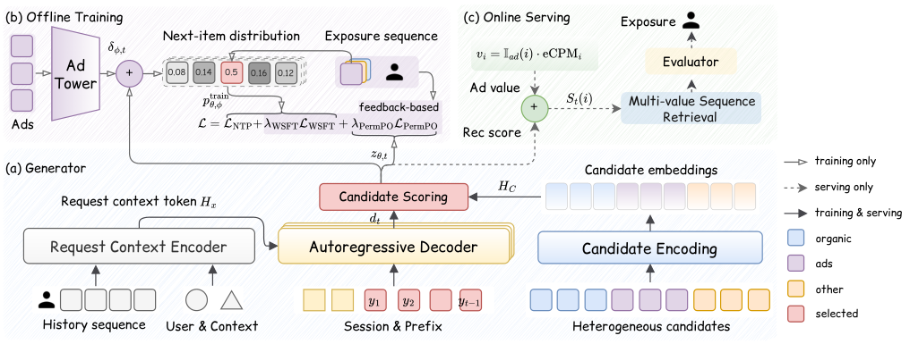
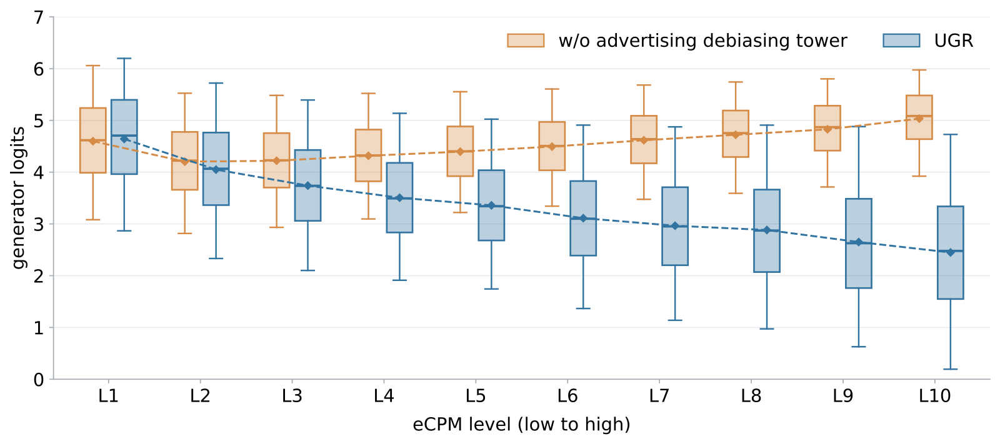
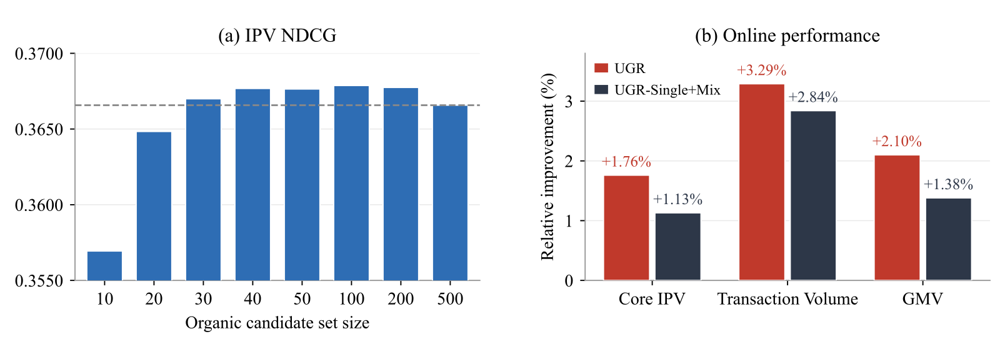
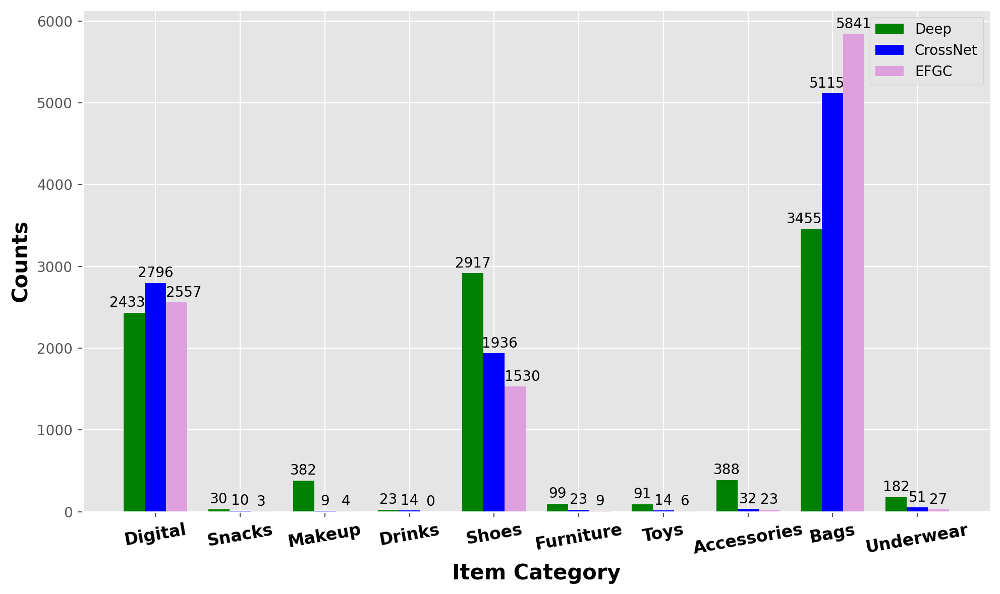
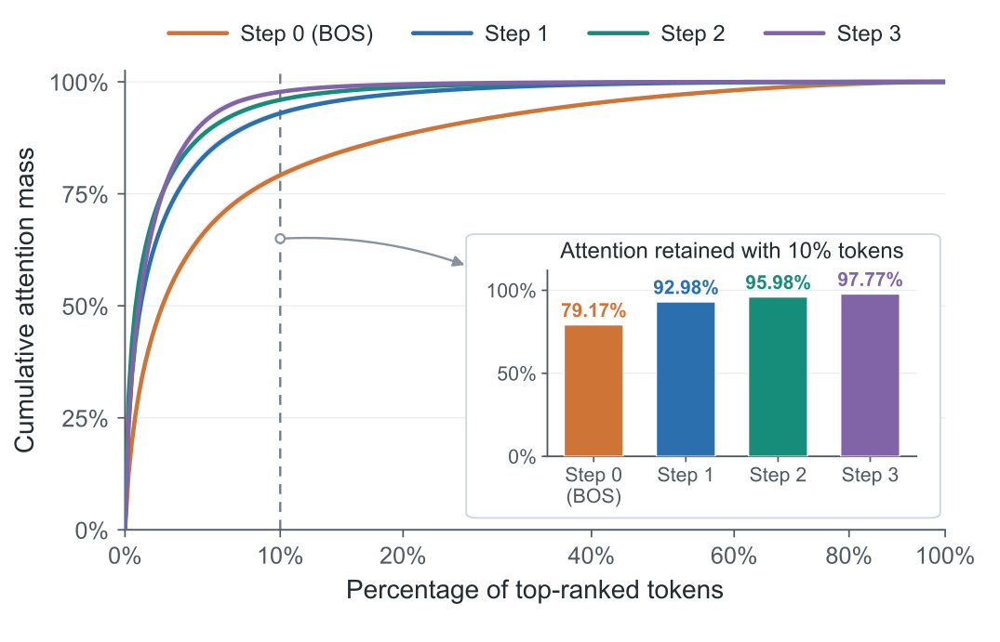

Contents · 9 sections
1What problem is it actually solving?2The pipeline: one generator and two extra training signals3How are a thousand candidates ranked together?4Why add WSFT and PermPO?5Why split ad value between training and serving?6What the results show7Where I think it falls short8How a recommendation team could try it9Is it worth reading?SHARE
Taobao's generative ranking framework UGR has one generative model directly produce the screen the user finally sees: the roughly one thousand organic, ad and other-business candidates of a request go to the model together, and it generates the final list item by item, instead of each business ranking its own items and a blending stage stitching them together. That stitching step is the old problem: the blender inserts other content into the generator's list, positions and context change, and what the model learned about which item follows which no longer holds. Training goes beyond imitating logged exposure sequences: samples are weighted by post-exposure clicks and purchases, and the model also learns which of two orderings is better. Ads keep the existing allocation rules and ad auction (GSP) pricing rules. In an online A/B test on Guess You Like, transaction volume rose 3.29% and GMV rose 2.10%. When the same model ranks only organic items and hands them to the old blender, transaction volume rises only 2.84%, and the gap is the value of unified generation itself. Teams that rerank e-commerce feeds, especially feeds where one screen mixes ads with items from several businesses, should read it: the generation architecture and preference training are known ideas, and UGR's contribution is making the generated list the final screen while shipping under the existing ad auction rules.
What problem is it actually solving?
Take an illustrative case. A user opens the Guess You Like feed, and the screen has four slots. The organic generative ranker has already ordered four items, and then the blender inserts an ad and a card from another business:
| Illustrative | Slot 1 | Slot 2 | Slot 3 | Slot 4 |
|---|---|---|---|---|
| Organic list from the generator | running shoe A | sports socks B | knee brace C | water bottle D |
| Final list after blending | running shoe A | ad: running shoe X | other business: live-stream card Y | sports socks B |
When the generator placed socks B, it assumed B sat right after shoe A. After blending, B is pushed to slot 4, behind a competing shoe and a live-stream card. The "B follows A" context the model learned no longer holds, and the blender that actually decides the screen knows nothing about how these items relate.
The paper puts this mismatch first and proposes generating the final list directly over the full cross-business candidate set of a request. Three things have to be solved for that. A request carries about a thousand candidates with different businesses and features, and they must be modeled together within online latency. Logged exposure sequences were produced by the old ranking policy, so imitating them does not reveal what users actually like. And ads are priced by GSP auction, so the generator must not break the existing auction rules.
The pipeline: one generator and two extra training signals

The data flow has four stages:
| Stage | Input | Output |
|---|---|---|
| Request encoding | user attributes, request context, behavior history | one request context token |
| Candidate encoding | about 1,000 cross-business candidates from upstream | one vector per candidate, already mixed with the others |
| Slot-by-slot decoding | the prefix chosen so far | a score for every remaining candidate at the next slot |
| Online search | recommendation score plus current ad eCPM | four candidate lists for the existing evaluator to pick from |
The key division of labor: the generator only models what the user will like, and the current bid enters only at serving time. During training, the logged historical eCPM goes only to a separate debiasing tower that the generator never sees. Details below.
How are a thousand candidates ranked together?
Candidates from all businesses go through the same MLP into one shared space. Besides item features, the input includes the business type and the scores and ranking signals produced by upstream retrieval and scoring. Ads and organic items become directly comparable while keeping track of where they came from.
Candidates then need to see each other, because whether an item deserves a slot depends on which other candidates the request offers. Full attention over a thousand candidates means about a million pairs, which is too slow online. UGR uses low-rank candidate attention: a learned projection matrix takes 8 differently weighted sums of the thousand candidates' keys to form 8 summary keys, and compresses the values into 8 the same way. Each summary is a weighted average over all candidates, with weights learned in training. Each candidate's query attends only to these 8 summaries, which still lets it see all of the request's roughly one thousand candidates indirectly. The work drops from about a million pairs to about eight thousand. This is computed once per request and reused by every decoding step and search path. Hoot says

- All pairs: 1000 × 1000, about a million pairs. Low-rank: 1000 × 8, about 8,000 pairs; the summaries are computed once per request and reused by every decoding step.
- One summary by hand (illustrative, 4 candidate keys 1, 2, 3, 4): weights 0.4, 0.3, 0.2, 0.1 give 2.0; weights 0.1, 0.2, 0.3, 0.4 give 3.0.
UGR's contribution is ranking ads and organic items together in one generative ranker, about a thousand candidates per request. Low-rank candidate attention compresses all keys and values into 8 summaries with a learned projection, and each candidate attends only to those. The paper does not say how these weights map when candidates are reordered or their number changes. Source: illustrative example of the paper's §3 low-rank candidate attention
The decoding sequence opens with a few tokens for the user's recent session (the paper calls them session tokens), encoded from the current session's context features. In both training and online search, the decoder starts from these tokens. They play a different role from the request context token: session tokens sit in the decoding sequence, while the request context token is read only through cross-attention. Each chosen candidate's vector is then appended to the sequence. At each step, causal self-attention reads the prefix, cross-attention reads the request context token, which gives the decoder state for this slot; a projection specific to this slot then turns it into a scoring vector. Each candidate's score is the cosine similarity between that scoring vector and the candidate vector times a learned scale, followed by a softmax over the candidates not yet chosen. Candidate interactions are already computed, so each step only answers one question: given what is already on the screen, what goes next.
Why add WSFT and PermPO?
With NTP alone, the model learns how the old system ranked, not what users liked. UGR adds two objectives that share one feedback score: a click or a view longer than 3 seconds counts 1, and a purchase adds 2.
The first objective, called WSFT, multiplies each exposed item's NTP loss by this score. The logged sequence is unchanged; positions where users reacted are simply learned harder. In an illustrative record, shoe A was clicked, socks B were clicked and bought, and C and D got nothing. A scores 1, B scores 3, C and D score 0. NTP still gives each of the four slots a loss, and WSFT adds another weighted by 1, 3, 0, 0, so the step predicting B is learned hardest. C and D are not dropped, because NTP still covers them.
WSFT changes how much each step counts but never compares orderings. PermPO fills that gap. It reorders the same four exposed items and scores each ordering by DCG, using the feedback score as the gain. In the example, the logged order A, B, C, D gets about , and moving B to the top gives about . The B-first ordering beats the logged one and forms a preference pair.
Here is the generator's log-probability for the whole ordering, with each step's softmax taken over the generator's own logits and no debiasing-tower correction, so the preference signal acts directly on the generator used at serving, and is the one with higher DCG. The intuition matches DPO: make the better ordering more likely than the worse one. Orderings with equal DCG are not paired, and requests with all-zero feedback add no loss. Preference pairs are built only from orderings of the same exposed items, so unexposed candidates are never placed into them; each step's probability is still a softmax over all candidates not yet chosen. The three losses are summed, with weight 1 for WSFT and 15 for PermPO.
Why split ad value between training and serving?

Online, the total score is the recommendation score plus times the ad's eCPM. The recommendation score here is the scaled cosine similarity from before, the generator logit, not the probability after softmax. That total decides whether an ad wins and which slot it takes. The trouble is the training data. High-bid ads were exposed more often because of the old auction. A generator that fits exposures directly mistakes "this ad bid high" for "users like it" and bakes it into the recommendation score. Serving then adds eCPM again, and the bid is counted twice.
UGR adds a small tower during training. Its input is ad features plus the logged eCPM, and its output is a correction added to the ad's score; for non-ads the correction is zero. During training the correction is added to the generator logit before the softmax over legal candidates, and the model fits exposures with that distribution, so the bid-driven part of exposure is explained by the tower. The generator itself never sees eCPM or auction features. At serving time the tower is removed, and only the generator score plus current eCPM is used.
The figure shows the effect. Without the tower, the generator score correlates with eCPM at 0.195. With it, that correlation becomes −0.313, while the tower's correction correlates with eCPM at 0.727. The tower takes up most of the bid-related part. The generator score does not become independent of the bid, though; it turns negatively correlated, which the limitations section returns to.
Serving runs a multi-path search, in effect a beam search of width 4, on each step's total score, the generator logit plus times current eCPM. At each step every kept prefix is extended with every legal candidate, a path's score is the sum of its step scores, all extensions are ranked together, and the top 4 are kept. After 4 steps there are four 4-item lists, and the existing downstream evaluator picks one for exposure. The paper states that ads keep the existing allocation and GSP pricing rules, but it does not say how, after the downstream evaluator picks the final list, the step-by-step ad competition in search maps to the final exposed slot and the actual GSP charge.
What the results show
Both offline datasets come from 30 consecutive days of Guess You Like logs, covering two scenarios with different user intent. Every sample carries the full upstream candidate set without truncation or sampling, so offline evaluation faces the same candidate scale as production. Scenario 1, where IPV means a click or a view over 3 seconds:
| Model | Hitrate | IPV NDCG | IPV MAP | CVR NDCG | CVR MAP |
|---|---|---|---|---|---|
| GReF | 0.5310 | 0.3459 | 0.2926 | 0.5274 | 0.4744 |
| UniRank | 0.5668 | 0.3496 | 0.2802 | 0.4514 | 0.3650 |
| DEGR | 0.5267 | 0.3474 | 0.2947 | 0.5314 | 0.4773 |
| UGR | 0.5295 | 0.3666 | 0.3169 | 0.5394 | 0.4871 |
UGR is best on all six ranking metrics in both scenarios, and its IPV MAP is 7.53% above the strongest baseline. Yet UniRank has the highest Hitrate, the overlap with logged exposures. Ranking more like the old system does not mean ranking better by real feedback, which is exactly why WSFT and PermPO exist.
| Scenario 1 ablation | Hitrate | IPV NDCG | CVR NDCG | CVR AUC |
|---|---|---|---|---|
| Full UGR | 0.5295 | 0.3666 | 0.5394 | 0.7023 |
| NTP only | 0.5291 | 0.3382 | 0.5122 | 0.6630 |
| Without WSFT | 0.5255 | 0.3539 | 0.5375 | 0.7069 |
| Without PermPO | 0.5296 | 0.3453 | 0.5137 | 0.6614 |
| Without tower | 0.5227 | 0.3614 | 0.5256 | 0.6924 |
Removing PermPO drops IPV NDCG from 0.3666 to 0.3453, nearly back to NTP only, a larger drop than removing WSFT. Removing WSFT mostly hurts IPV NDCG and MAP, while both the IPV and CVR AUC are even slightly higher. Removing the tower lowers every metric, with CVR MAP falling from 0.4871 to 0.4716.

The most convincing evidence is the three-way online test. UGR and UGR-Single+Mix ran at the same time. UGR-Single+Mix is the same model ranking organic items only, followed by the existing blender. Each took at least 5% of traffic for over 14 days, with identical evaluator and ad constraints. Against the production baseline, Single+Mix raised transaction volume 2.84% and GMV 1.38%, while UGR reached 3.29% and 2.10%. The Single+Mix gains mean the model alone is already strong, so UGR's extra gain comes from folding blending into generation. Average latency rose only 12 ms; ad share of impressions fell 0.93% and ad spend rose 0.08%, both within guardrails.
Where I think it falls short
First, the lists are short. Each request yields four lists of four items, and the existing evaluator still picks one. With a four-slot prefix, the paper has no experiment on how slot-by-slot error and latency behave for longer screens or continuous scrolling.
Second, the full candidate set shows no clear offline gain by itself. When only organic candidates are truncated, keeping 30 to 200 of them stays within about 0.5% of the full 500 on IPV NDCG. In other words, within the tested range more organic candidates did not clearly lift the offline metric, and the extra value of unified generation shows up in the online comparison with Single+Mix. If blending causes little mismatch to begin with, there is less to gain.
Third, the tower may overcorrect. With it, the generator score turns negatively correlated with eCPM (−0.313), so high-bid ads get lower recommendation scores and rely on times eCPM to make up the difference. Whether an ad wins then depends more on getting that single coefficient right. The 0.93% drop in ad share may be related.
How a recommendation team could try it
- Measure the mismatch first. From logs, compare the reranker's output with the final blended list and see how much positions and neighbors change. If most requests barely change, unified generation will gain little.
- Add PermPO to an existing generative reranker. It needs only feedback and permutations of exposed items, with no architecture change. In the paper's ablation, removing PermPO hurts all six ranking metrics more than removing WSFT does (there is no variant without NTP), so check whether offline NDCG rises clearly.
- Where ads are blended, add the training-time debiasing tower. Before launch, plot generator score against eCPM levels comparing a generator trained with the tower (removed at serving) against one trained without it, and confirm the upward trend with eCPM is clearly weaker for the generator trained with the tower, then open a small slice of traffic.
- Finally fold other businesses' candidates into the same generator and run the same three-way test as Single+Mix, to separate gains from the model and gains from unified blending.
Is it worth reading?
Once blending changes the list, the context the reranker learned is void. Many teams face this, and UGR offers a fix that ships under GSP rules, with a clean controlled comparison.
| Dimension | Assessment |
|---|---|
| Problem importance | High. Any e-commerce or content feed with multi-business blending hits the gap between generated and final lists |
| Method novelty | Medium. Generation and preference training are known; the novelty is applying them to the full cross-business set and splitting ad value between training and serving |
| Evidence | Strong. Two large datasets, full ablations, and a three-way online test against Single+Mix |
| Engineering cost | Medium-high. The blending pipeline changes and ad pricing must stay intact, though latency rises only 12 ms |
| Worth trying | PermPO and the debiasing tower can be tried alone first; unified generation only after confirming the blending mismatch is large |
How did this read for you?
Hoot made a note. Thanks for the feedback.
One tap, no sign-in; tap again to undo. Only anonymous counts are kept, never who you are.
Related papersMore from Paper Daily
 Generative · 2026-10-24UniRec: A Unified Expressive-Aligned Generative Recommendation Framework for E-commerceGenerative recommendation generates a product's semantic IDs layer by layer, and before the first layer it has seen no product-side information at all; this is its gap with discriminative ranking models. When a discriminative model scores a candidate it sees the product's category, shop and brand directly and crosses them with user features. UniRec has the model first generate the product's categ…
Generative · 2026-10-24UniRec: A Unified Expressive-Aligned Generative Recommendation Framework for E-commerceGenerative recommendation generates a product's semantic IDs layer by layer, and before the first layer it has seen no product-side information at all; this is its gap with discriminative ranking models. When a discriminative model scores a candidate it sees the product's category, shop and brand directly and crosses them with user features. UniRec has the model first generate the product's categ… Personalization · 2026-10-28Unified Heterogeneous Feature Interaction via Effective-Rank Scaling for Recommender SystemsMost production ranking models squeeze the user's behavior sequence into one fixed vector before it reaches the feature-interaction module, so later interaction layers can no longer see which clicks or add-to-carts actually happened. Alibaba Taobao's HiRank keeps the behavior sequence alive through every layer of the backbone, and builds the retrieval query over long-term history from the user's…
Personalization · 2026-10-28Unified Heterogeneous Feature Interaction via Effective-Rank Scaling for Recommender SystemsMost production ranking models squeeze the user's behavior sequence into one fixed vector before it reaches the feature-interaction module, so later interaction layers can no longer see which clicks or add-to-carts actually happened. Alibaba Taobao's HiRank keeps the behavior sequence alive through every layer of the backbone, and builds the retrieval query over long-term history from the user's… Generative · 2026-10-29PailitaoMMSearch2.0 Technical Report: Scaling Generative Retrieval to Unified End-to-End Multimodal SearchIn Taobao's Pailitao, a user may photograph a shirt and ask for shorts to match it, which calls for a complementary item rather than a duplicate. The usual pipeline classifies intent first and routes to separate retrieval channels, so one wrong step breaks everything after it. Alibaba's report lets a 2B vision-language model read the raw image and instruction and generate product Semantic IDs dir…
Generative · 2026-10-29PailitaoMMSearch2.0 Technical Report: Scaling Generative Retrieval to Unified End-to-End Multimodal SearchIn Taobao's Pailitao, a user may photograph a shirt and ask for shorts to match it, which calls for a complementary item rather than a duplicate. The usual pipeline classifies intent first and routes to separate retrieval channels, so one wrong step breaks everything after it. Alibaba's report lets a 2B vision-language model read the raw image and instruction and generate product Semantic IDs dir…
Personalization · 2026-10-30Multi-Branch Cooperation Networks for Enhanced Click-Through Rate Prediction in Large-Scale E-Commerce SearchRanking teams should read this one, because it points out an often overlooked waste in multi-branch models: the branches are good at different samples, yet never learn from each other in training. The Pailitao team at Taobao (search by photo) makes three branches correct each other during training. On a given sample, if one branch gets the click right and another gets it wrong, the right branch's…
Generative · 2026-11-02PFA: Attention Can Be Progressively Focused in Long-Sequence Generative RecommendationThe authors at Alibaba found that when a generative recommender decodes with beam search, attention concentrates on a few past behaviors as decoding proceeds, and which behaviors matter stays largely the same from step to step. Building on this, PFA picks the important history once for the whole decode, instead of having every beam pick it again at every step. It attends to the full history as us… Generative · 2026-10-29KL-MOPD: Discrepancy-Aware Multi-Objective On-Policy Distillation for Generative RecommendationWhen click and value teachers are distilled together into a generative recommender, equal per-token weights are unfair. On TencentGR the student's KL to the value teacher at the first token is 3.13 times its KL to the click teacher, and the harder teacher switches to the click teacher on the last two tokens. KL-MOPD from Zhejiang University and Alibaba weights each teacher per token by its pre-tr…
Generative · 2026-10-29KL-MOPD: Discrepancy-Aware Multi-Objective On-Policy Distillation for Generative RecommendationWhen click and value teachers are distilled together into a generative recommender, equal per-token weights are unfair. On TencentGR the student's KL to the value teacher at the first token is 3.13 times its KL to the click teacher, and the harder teacher switches to the click teacher on the last two tokens. KL-MOPD from Zhejiang University and Alibaba weights each teacher per token by its pre-tr… Generative · 2026-10-29Latent Residual Reasoning for Ranking in Generative RecommendationGenerative ranking models usually score every candidate in one forward pass. Refiner, from Meituan and the University of Science and Technology of China, adds a few more steps. Each candidate gets a reasoning token, and each step predicts only a correction added to the original score. The base model stays frozen; only LoRA and a new output layer are trained. On Steam it lifts MTGR's AUC from 0.76…
Generative · 2026-10-29Latent Residual Reasoning for Ranking in Generative RecommendationGenerative ranking models usually score every candidate in one forward pass. Refiner, from Meituan and the University of Science and Technology of China, adds a few more steps. Each candidate gets a reasoning token, and each step predicts only a correction added to the original score. The base model stays frozen; only LoRA and a new output layer are trained. On Steam it lifts MTGR's AUC from 0.76…
Discussion
Add experiment details, reproduction notes or a different take. Requires a GitHub sign-in.
Loading the discussion…